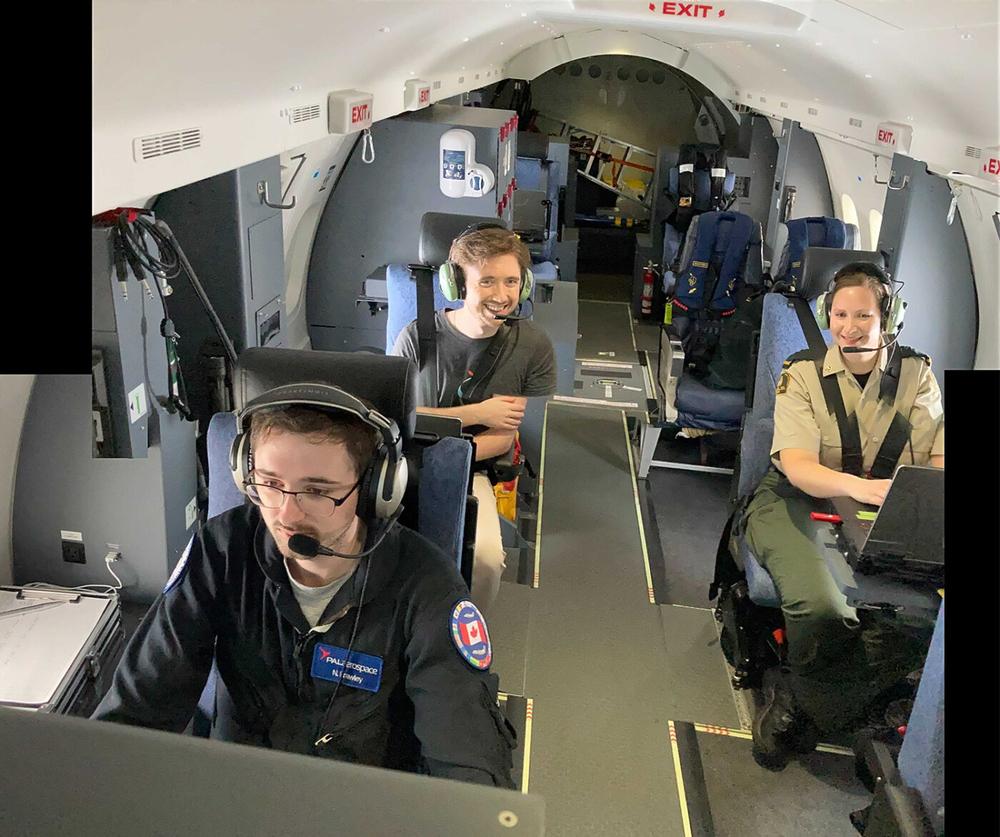

News

Updated Marine Manager Portal Gives More Diverse and Dynamic Tools for Ocean Management
Data and technology / By Tim White and Matt Gummery
Researchers can now compare levels of human activity over time to better fathom human behavior and impacts of management on marine ecosystems Marine protected areas (MPAs) are an important tool for safeguarding fragile ecosystems, endemic species and fish stocks throughout our global ocean. A growing number of countries around the world, with Chile as a …

Updated Marine Manager Portal Gives More Diverse and Dynamic Tools for Ocean Management
Data and technology / By Tim White and Matt Gummery
Researchers can now compare levels of human activity over time to better fathom human behavior and impacts of management on marine ecosystems Marine protected areas (MPAs) are an important tool for safeguarding fragile ecosystems, endemic species and fish stocks throughout our global ocean. A growing number of countries around the world, with Chile as a …